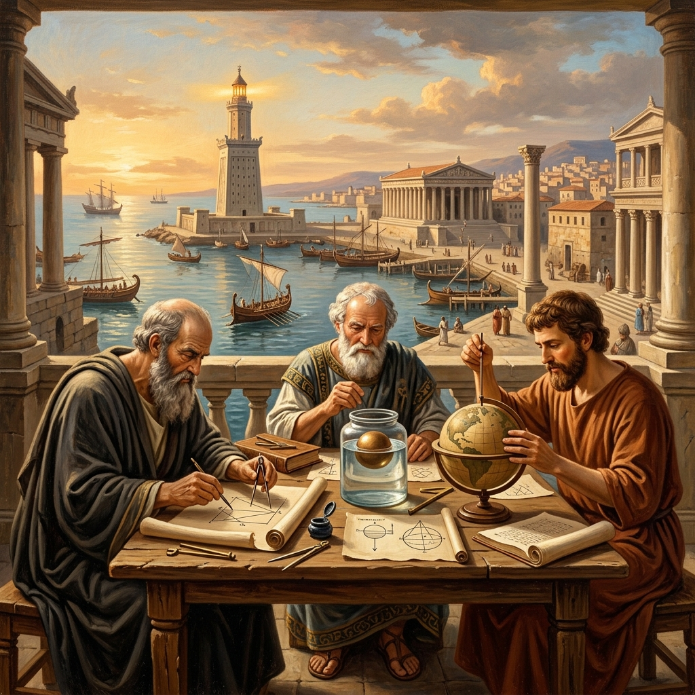

INSTITUTO FEDERAL DE EDUCAÇÃO,
CIÊNCIA E TECNOLOGIA DA BAHIA – IFBA
Campus Camaçari
A Geometria Helenística de Alexandria
O Legado Axiomático e Prático da Matemática Grega

Objetivos do Trabalho
Geral: Analisar o avanço histórico e conceitual da geometria no período, focando no método dedutivo de Euclides e nas aproximações quantitativas de Arquimedes.
Específicos:
Investigar a lógica dos Elementos de Euclides e seus postulados.
Explorar o método de exaustão de Arquimedes para o cálculo de áreas e aproximação de $\pi$.
Referências
• EUCLIDES. Os Elementos, Tradução de Irineu Bicudo. São Paulo: Editora UNESP, 2009.
• HEATH, Thomas L. A History of Greek Mathematics, From Thales to Euclid. Oxford: Clarendon Press, 1921.
• NETZ, Reviel, The Works of Archimedes: Translation and Commentary. Cambridge University Press, 2004.
Metodologia
O trabalho combina uma revisão histórico-bibliográfica dos tratados clássicos com o uso de geometria dinâmica moderna (GeoGebra).
Foram reconstruídos virtualmente experimentos históricos como a circunferência da Terra.
Roque: Tatiana. Reconstrução digital do seu experimento mostrou uma precisão impressionante, com margem de erro menor que 2% se comparada aos dados de satélite atuais.
Considerações Finais
O período provou que a teoria e a prática andam juntas. O modelo euclidiano estruturou a ciência por dois milênios e Arquimedes semeou o cálculo moderno.
Trazer essa abordagem histórica aliada a softwares interativos para as salas de aula de hoje, ajuda a humanizar o ensino da matemática, conectando o período helenista a aplicações modernas e reais.